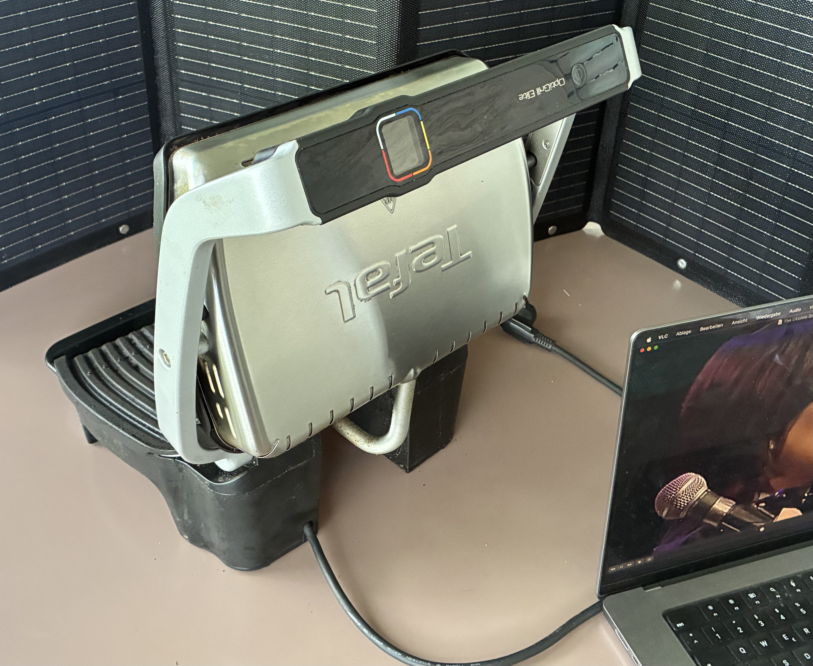

Er ist nicht günstig. Aber ich kann ohne diesen Grill nicht mehr leben.
Der Tefal OptiGrill Elite ist ein Kontaktgrill: zwei beheizte Platten, die das Grillgut von beiden Seiten umschließen. Was unspektakulär klingt, wird durch ein Detail wirklich clever — der eingebaute Sensor misst die Dicke des Fleischs und passt Grillzeit und Temperatur entsprechend an.
Steak exakt auf den Punkt, dank Dickenmessung
Das ist der eigentliche Kunstgriff: Der Grill erkennt, wie dick das Steak ist, und berechnet daraus, wie lange es garen muss, um den gewünschten Punkt zu treffen — zum Beispiel medium. Wer ausgeprägte Grillstreifen auf dem Fleisch haben möchte, kann das zusätzlich über einen eigenen Knopf aktivieren.
Kein Gas, keine Holzkohle — nur Strom
Keine Gasflasche zum Schleppen, keine Holzkohle zum Anzünden, kein Warten auf Glut. Einstecken, vorheizen, fertig. Für einen Balkon, eine kleine Küche oder alle ohne Garten ist allein das schon viel wert.
Die Grillfläche ist nicht riesig. Für 2–3 Personen reicht sie locker; ab etwa 3 Personen wird es eng, und ein echter Gasgrill gewinnt bei der reinen Kapazität weiterhin.
Fazit nach 2,5 Jahren
Ich habe den OptiGrill Elite jetzt seit zweieinhalb Jahren, und er ist bei jedem Grillen im Einsatz. Er kann bei Geschmack und Präzision wirklich mit Gasgrill-Ergebnissen mithalten — er passt nur nicht so viel auf einmal drauf. Es gibt etwas günstigere Modelle in der Reihe, aber nur die Elite-Version hat die genaue Grillgut-Anzeige und den Knopf fürs scharfe Anbraten. Ich liebe das Ding.
Ein Hinweis zum Preis: Dieser Grill ist keine Schnäppchenoption, und der Preis des Herstellers ist, was er ist. Wenn euch andere Shops begegnen, die ihn deutlich darunter anbieten, lohnt sich Vorsicht — einen so großen Rabatt würde der Hersteller in aller Regel nicht autorisieren.
👉 Den Tefal OptiGrill Elite bei Amazon ansehen *
Passend dazu auf diesem Blog: